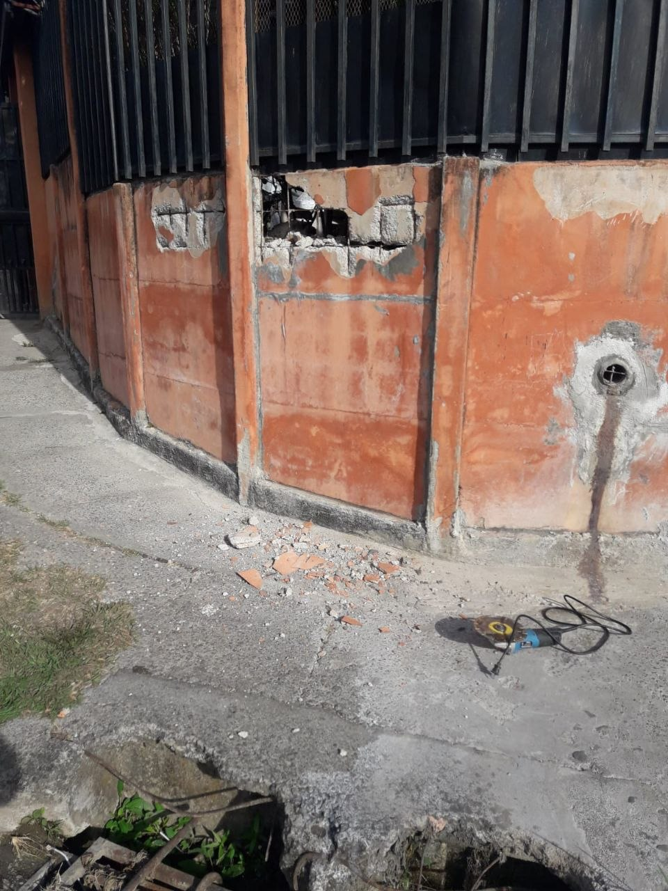
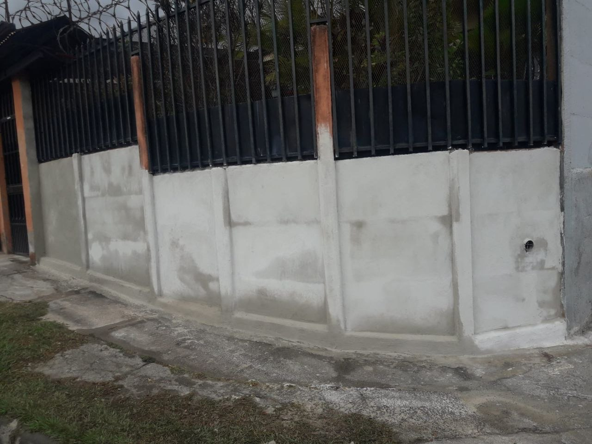
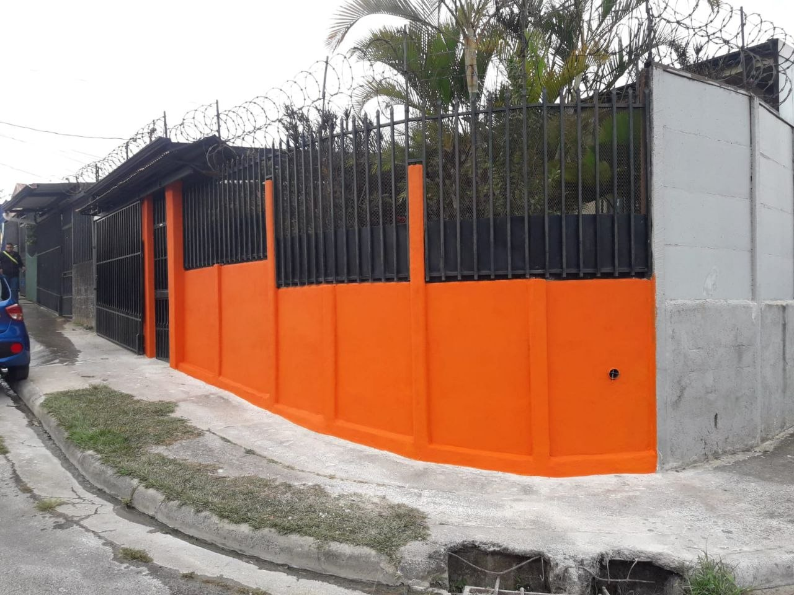

BJ Soluciones
Construcción · Remodelación · Acabados
El mismo muro
en tres momentos

Antes

Durante

Después
Muro dañado,
muro nuevo
Resane, sellado y pintura que aguanta sol y lluvia.
Cotice gratis
6004-0817